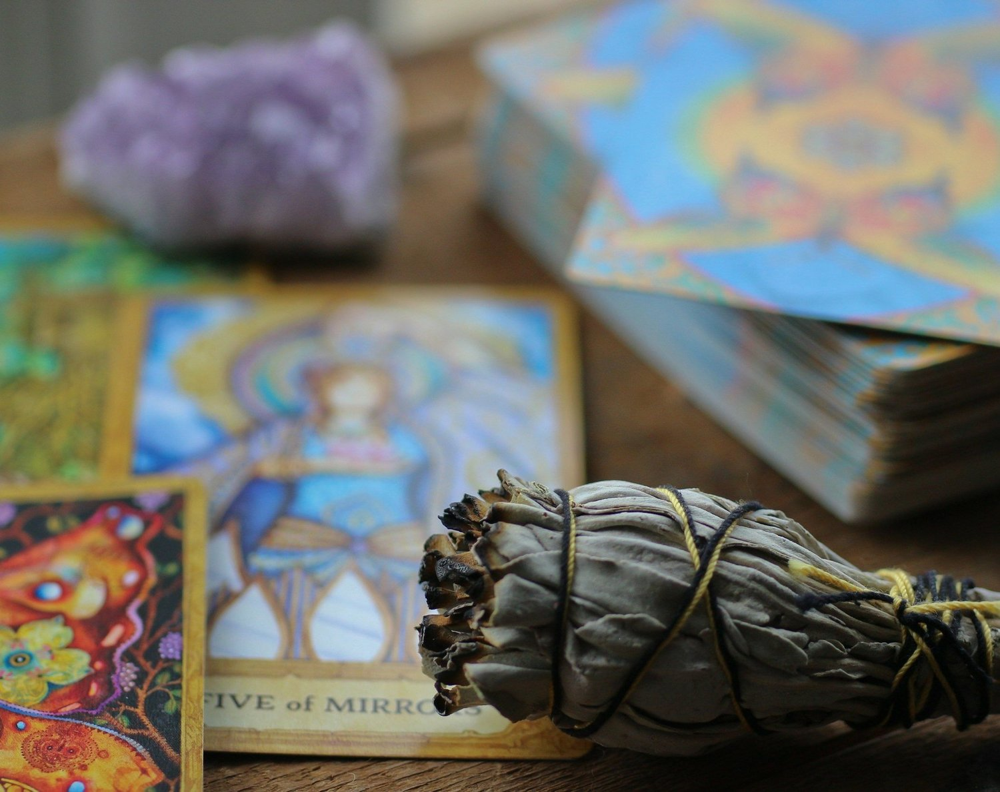

Akashic Records & Intuition
Akashic Records & IntuitionNot
Let's be honest: the phrase Akashic Records can sound a little out-there if you're not already deep into spiritual practices.
Read BlogBlog topic
Browse the latest Healer Next Door blogs in this topic.
Browse
Blog
Akashic Records & IntuitionLet's be honest: the phrase Akashic Records can sound a little out-there if you're not already deep into spiritual practices.
Read Blog Akashic Records & Intuition
Akashic Records & IntuitionRalph Waldo Emerson, the American philosopher, once stated, “The primary wisdom is intuition.” This concept is an important part of our human experience.
Read Blog Akashic Records & Intuition
Akashic Records & IntuitionI’m thrilled to share that I’m now offering Akashic Records readings.
Read Blog Akashic Records & Intuition
Akashic Records & IntuitionWhile reading my Akashic records, I received a beautiful and thought-provoking message: “Nothing is anything until it becomes something, and then it becomes everything.” This phrase beautifully underscores how we assign meaning to our surroundings, illustrating that through this meaning, our experiences truly shape our reality.
Read Blog
Akashic Records & IntuitionIf you are like many people, getting a tarot card reading was your first step into the metaphysical world.
Read BlogIn the swirl of misconceptions, misunderstandings, and general confusion surrounding the fields of parapsychology and psychic activity, most people have no idea how to make distinctions between different types of psychic abilities.
Read BlogRalph Waldo Emerson, the American philosopher said, “The primary wisdom is intuition.” It is not just a theory, it is part of who we are.
Read Blog Akashic Records & Intuition
Akashic Records & IntuitionEven if you have wandered far off your spiritual path, the way back is easier than you think.
Read Blog Akashic Records & Intuition
Akashic Records & IntuitionThe Oxford English Dictionary defines intuition as “the immediate apprehension of an object by the mind without the intervention of any reasoning process.”
Read Blog Akashic Records & Intuition
Akashic Records & IntuitionEvery month, I will introduce you to someone I’ve met along my spiritual path who has inspired me.
Read Blog Akashic Records & Intuition
Akashic Records & IntuitionEvery month, I will introduce you to someone I’ve met along my spiritual path who has inspired me.
Read Blog Akashic Records & Intuition
Akashic Records & IntuitionAngels are truly universal.
Read BlogServices
Learn about Reiki, Akashic Records, meditation, Work Trauma Coaching, and Corporate Wellness.
View Services